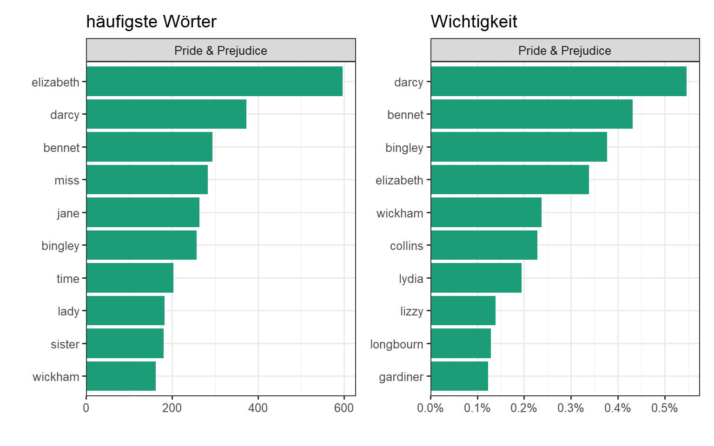

Wörter und Dokument Häufigkeit
Textquantifizierung
Eine der Hauptfragen in NLP ist, zu quantifizieren um was es in dem Dokument geht unter Benutzung der Wörter die enthalten sind. Während wir diese “Term Häufigkeit” (“term frequency” - \(tf\)) messen können, können wir ebenfalls die “inverse Dokumentenhäufigkeit” (“inverse document frequency” - \(idf\)) berechnen. Die Term Häufigkeit ist relativ einfach zu verstehen:
Die inverse Dokumentenhäufigkeit versucht, Wörter nach der Wichtigkeit zu gewichten.
Dies wird auch durch einfaches Zählen bestimmt.
Beispiel idf
Eine Sammlung von Texten sei eine Dokumenten Sammlung. Jeder Text darin ist ein Dokument:
- Dokument 1: “Die Katze schläft auf dem Sofa.”
- Dokument 2: “Der Hund läuft im Garten.”
- Dokument 3: “Die Katze jagd die Maus.”
Es soll nun die “Wichtigkeit” des Wortes Katze bestimmt werden.
Formel
\[ IDF(wort) = \log \left( \frac{\text{Anzahl aller Dokumente}}{\text{Anzahl aller Dokumente, die das Wort enthalten}} \right)\]
Die Anzahl aller Dokumente (Sätze) beträgt: \(n_{Dokumente} = 3\).
Die Anzahl aller Dokumente, die das Wort “Katze” enthalten: \(n_{\text{enthalten Wort}} = 2\)
\[IDF(Katze)\approx 0.18\]
Je kleiner der \(IDF\), desto unwichtiger ist das Wort. Das Wort ist weniger speziell.
Je größer der \(IDF\), desto wichtiger ist das Wort für die Dokumente.
Termhäufigkeit
Im Nachfolgenden wird die Termhäufigkeit in allen Werken von Jane Austen berechnet
Die Ergebnistabelle enthält ein Wort/ein Buch. n bezeichnet wie oft dieses Wort in diesem Buch verwendet wird, während total die komplette Anzahl aller Wörter in dem speziellen Buch darstellt. Im ersten schauen wir uns die Verteilung von n/total für jeden Roman an. Wir stellen also die Häufigkeit der Terme im Bezug zur kompletten Häufigkeit der Wörter dar: die Termhäufigkeit (tf)
Zipf’sches Gesetz
Die Daten folgen einer Gesetzmäßigkeit, auch Zipf’sches Gesetz genannt.
Das Zipf’sche Gesetz besagt, dass in einer Sprache die Häufigkeit eines Wortes umgekehrt proportional zu seinem Rang in einer Häufigkeitsliste ist.
Wenige Wörter kommen sehr oft vor, während die Mehrheit der Wörter selten verwendet wird.Das kann eindrucksvoll am Beispiel der Bücher von Jane Austen gezeigt werden.
Die Zipf-Verteilung kann in R natürlich auch modelliert werden. Als wesentlicher Faktor gilt der Formparameter. Der Einfluss des Formparameters ist in der nachfolgenden Parameterstudie dargestellt.
Wichtigkeit von Wörtern
Die inverse Dokumentenhäufigkeit (idf) wird auch gerne mit der Wichtigeit von Wörtern verglichen. Aufgeschlüsselt auf Buch sind die Top 10 der wichtigen Bücher unten im plot aufgeführt. Vor allem werden die Hauptfiguren angezeigt, was absolut Sinn ergibt.
Vergleich mit Termhäufigkeit
Ein Vergleich der idf mit der tf zeigt, das nur weil ein Wort häufig in einem Buch vorkommt, dies nicht automatisch wichtig ist. Im Vergleich sind die Top 10 der häufigsten Wörter gegen die Top 10 der idf dargestellt. Klar zu erkennen ist, das die für die Romane am wichtigsten Wörter (vor allem Romanfiguren) am ehesten mit der idf vorherzusagen sind.
Warning: Paket 'janeaustenr' wurde unter R Version 4.4.2 erstelltWarning: Paket 'tidytext' wurde unter R Version 4.4.2 erstellt